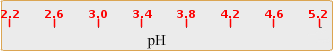
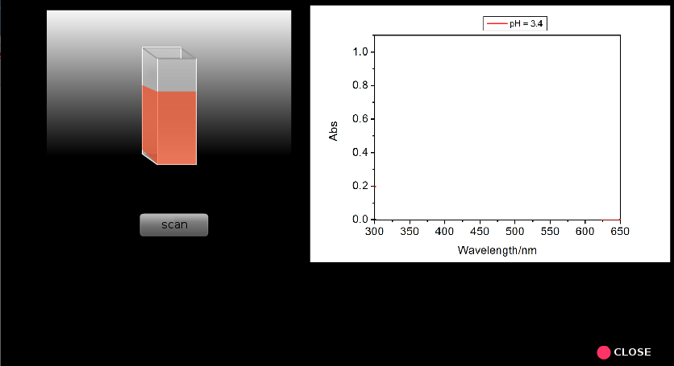
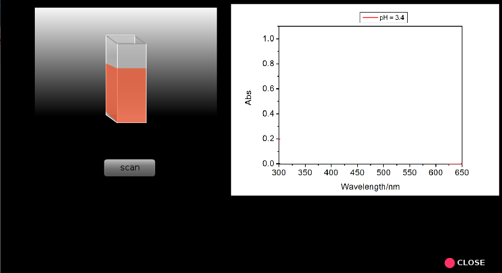
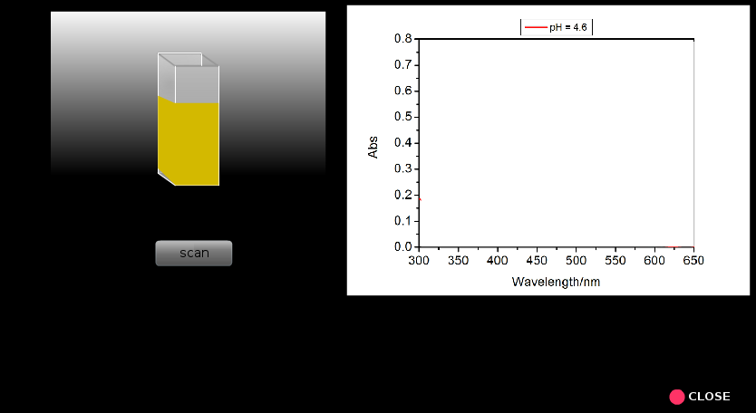
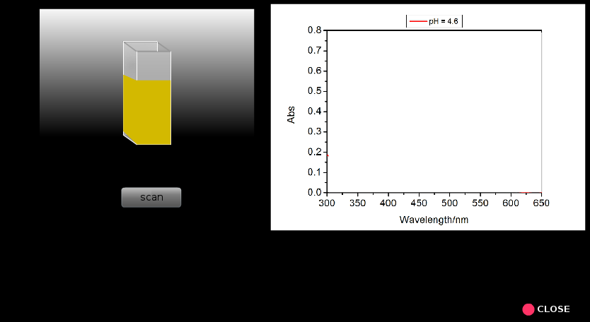

×
మాన్యువల్
- కింది పరిష్కారాలను సిద్ధం చేయండి: (i) 100 గ్రా స్వేదనజలంలో 0.05 గ్రా మిథైల్ నారింజను కరిగించడం ద్వారా 0.5 గ్రా / ఎల్ మిథైల్ ఆరెంజ్ ద్రావణం; (ii) 0.2 M డిసోడియం హైడ్రోజన్ ఆర్థోఫాస్ఫేట్ (Na2HPO4) 5.68 గ్రా Na కరిగించడం ద్వారా పరిష్కారం2HPO4200 mL స్వేదనజలంలో; మరియు (iii) 500 ఎంఎల్ స్వేదనజలంలో 9.61 గ్రా సిట్రిక్ ఆమ్లాన్ని కరిగించడం ద్వారా 0.1 ఎం సిట్రిక్ యాసిడ్ ద్రావణం.
- Na యొక్క వివిధ మొత్తాలను కలపడం ద్వారా ఎనిమిది బఫర్ పరిష్కారాలను సిద్ధం చేయండి2HPO4ద్రావణం మరియు సిట్రిక్ యాసిడ్ ద్రావణం టేబుల్ 1 లో ఇచ్చినట్లు.
- ప్రతి బఫర్ ద్రావణాన్ని 25 ఎంఎల్ వాల్యూమ్ యొక్క రెండు సమాన భాగాలుగా విభజించండి.
- ప్రతి బఫర్ ద్రావణంలో ఒక 25 ఎంఎల్ భాగానికి 0.5 ఎంఎల్ మిథైల్ ఆరెంజ్ ద్రావణాన్ని జోడించండి. మిథైల్ ఆరెంజ్ సూచికను కలిగి ఉన్న బఫర్ పరిష్కారాల శోషణ కొలతలు బఫర్ యొక్క ఇతర భాగాలకు సూచనగా లేదా నమూనా ఖాళీగా నిర్వహించాలి. ఈ నమూనా పరిష్కారాలు ఎంపిక స్థాయిలో చూపబడతాయి.
- కంప్యూటర్ మరియు పరికర శక్తులపై మారండి; పరికరం యొక్క ‘సన్నాహక’ కోసం 30 నిమిషాలు వేచి ఉండండి.
- వాయిద్యంలో ఒకరు కాంతి వనరులను (UV మరియు కనిపించేవి) ఎంచుకోవచ్చు, చీలిక వెడల్పు, స్కాన్ వేగం మరియు% ప్రసారం లేదా శోషణ ప్రదర్శన, తరంగదైర్ఘ్యం ఆసక్తి శ్రేణి మొదలైనవి ఎంచుకోవచ్చు.
- ఇచ్చిన మార్గం పొడవుతో శుభ్రంగా మరియు పొడిగా లేదా సరిగ్గా కడిగిన క్వార్ట్జ్ క్యూవెట్ తీసుకోండి (చెప్పండి, 1 సెం.మీ).
- నమూనా ఖాళీ (స్వచ్ఛమైన బఫర్ ద్రావణం) తో ఒక కువెట్టిని మరియు మిథైల్ ఆరెంజ్ ద్రావణాన్ని కలిగి ఉన్న సంబంధిత బఫర్ ద్రావణంతో మరొక క్యూట్ నింపండి.
- నమూనా హోల్డర్లో నమూనాను ఖాళీగా ఉంచండి మరియు నమూనా హోల్డర్లో నమూనాను ఉంచండి.
- 300 నుండి 650 nm వరకు తరంగదైర్ఘ్యం పరిధిలోని ప్రతి శాంపిల్ కోసం స్కాన్ (A వర్సెస్ λ) ను అమలు చేయండి.
- ఇప్పుడు గరిష్ట శోషణ (యొక్క తరంగదైర్ఘ్యాలను కనుగొనండిగరిష్టంగా), సంబంధిత శోషణ, వద్ద శోషణINH+lగరిష్టంగాఅన్ని pH విలువలకు మరియు ఈ డేటాను కలిగి ఉన్న పట్టికను తయారు చేయండి (టేబుల్ 2).
- ఎలాగో చర్చించండిగరిష్టంగామరియు సంబంధిత శోషణ ద్రావణం యొక్క pH తో మారుతుంది.
- పికెను లెక్కించండిఒకప్రతి pH విలువకు. సగటు pK ని కనుగొనండిఒక.
- ప్లాట్ pH వర్సెస్ లాగ్ ([In] / [InH+]). PK ని నిర్ణయించండిఒకpH అక్షంతో రేఖ యొక్క ఖండన నుండి.
- గ్రాఫికల్ గా నిర్ణయించిన pK ని పోల్చండిఒకలెక్కించిన సగటు pK తో విలువఒకవిలువ.
- యాసిడ్ డిస్సోసియేషన్ స్థిరాంకాన్ని నిర్ణయించండి, K.ఒకమిథైల్ నారింజ కోసం.




 

 
